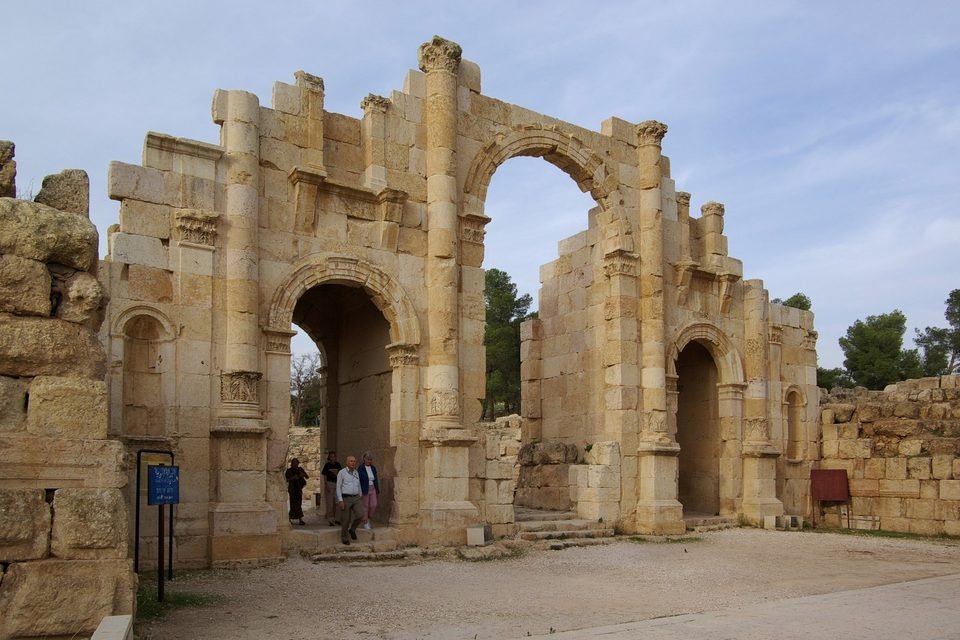

Jordan · Jerash
Jerash audio guide
20 stops · 23 min
Billed in ZAR
Unlocks in this browser after payment.
Walk a Roman city from arch to churches. Listen here, or get the Earwise app to play as you walk.
Stops
- 1
Hadrian's Arch
In front of the tall triple arch near the park entrance, facing north towards the ruins. This is stop 1 on the route.
Play0:00 / –:––Read along
Welcome to Gerasa, the city we call Jerash. In the winter of AD 129 to 130 the emperor Hadrian came to stay, and the citizens built this arch in his honour. It has three openings: a tall central passage for processions and two smaller ones for everyone else. Look just above the bases of the columns. Instead of plain stone you will see wreaths of carved acanthus leaves. It is an unusual feature, and the site guide reads it as the work of regional craftsmen.
The arch stands on open ground, well south of the old city wall, and that is no accident. It was meant to become the new southern gate of a much larger Gerasa. The city never grew this far, so the arch was left on its own. Guides at the site put the distance to the real gate at about four hundred metres.
In Greek times the city's formal name was Antioch on the Chrysorrhoas, as Jordan's Department of Antiquities records. According to the site guide, a Greek inscription on the side of the arch facing the city used it: "the city of the Antiochenes by the Chrysorrhoas, formerly the Gerasenes". The Chrysorrhoas, the "golden river", gave its name to the stream in the valley below. The same account says the upper half fell in the great earthquake of 749 and was rebuilt from its own fallen stones in the early 2000s.
That old name, Gerasenes, is one many visitors already know. In the Gospel of Mark, Jesus crosses the Sea of Galilee into "the region of the Gerasenes" and frees a man possessed by a legion of demons. Then he sends the man home to tell the Decapolis what God has done for him. Gerasa was one of the leading cities of that league, the Decapolis. Nobody knows exactly where by the lake the miracle took place, but the people of this city gave the region its name.
- 2
The Hippodrome
Beside the long stone wall of the arena, between Hadrian's Arch and the South Gate. This is stop 2 on the route.
Script and audio included when you buy - 3
The South Gate and the city wall
At the arched gateway where the path enters the ancient city. This is stop 3 on the route.
Script and audio included when you buy - 4
The Oval Plaza
In the middle of the great paved oval, surrounded by a curving ring of columns. This is stop 4 on the route.
Script and audio included when you buy - 5
The Temple of Zeus
On the terraces above the Oval Plaza, below the tall columns of the temple. This is stop 5 on the route.
Script and audio included when you buy - 6
The South Theatre
In the semicircular orchestra in front of the stage, or on the stone seats above it. This is stop 6 on the route.
Script and audio included when you buy - 7
The Archaeological Museum
At the small museum on Camp Hill, just east of the Oval Plaza. This is stop 7 on the route.
Script and audio included when you buy - 8
The Cardo Maximus
On the paved main street just north of the Oval Plaza, looking along the line of columns. This is stop 8 on the route.
Script and audio included when you buy - 9
The Macellum
On the west side of the Cardo, where the columns grow taller, at the entrance to the old market. This is stop 9 on the route.
Script and audio included when you buy - 10
The Umayyad mosque and houses
Beside the Cardo at the low remains of the mosque, between the market and the southern crossroads. This is stop 10 on the route.
Script and audio included when you buy - 11
The South Tetrapylon
In the centre of the crossroads, between four low square bases. This is stop 11 on the route.
Script and audio included when you buy - 12
The Cathedral and the Fountain Court
At the richly carved gateway on the west side of the Cardo, at the foot of the stairway. This is stop 12 on the route.
Script and audio included when you buy - 13
The Nymphaeum
Across the Cardo from the great curved fountain front, so you can take in the whole façade. This is stop 13 on the route.
Script and audio included when you buy - 14
The Church of St Theodore
On the terrace above the Fountain Court, inside the long church. This is stop 14 on the route.
Script and audio included when you buy - 15
Saints Cosmas and Damian and the Three Churches
In the shared courtyard of three churches side by side, at the northern church with its mosaic floor. This is stop 15 on the route.
Script and audio included when you buy - 16
The gateway and stairway of Artemis
On the Cardo in front of the four great columns of the gateway, at the foot of the stairs. This is stop 16 on the route.
Script and audio included when you buy - 17
The Temple of Artemis
In the great courtyard at the top, in front of the tall standing columns. This is stop 17 on the route.
Script and audio included when you buy - 18
The North Tetrapylon
Under the four-way arch where the Cardo meets the North Decumanus. This is stop 18 on the route.
Script and audio included when you buy - 19
The North Theatre
On the lower seats of the small theatre, just off the North Decumanus. This is stop 19 on the route.
Script and audio included when you buy - 20
The West Baths
Beside the massive fallen walls and vaults of the bath complex near the northern crossroads. This is stop 20 on the route.
Script and audio included when you buy
On the map
All 20 stop pins for this guide are marked. Open map